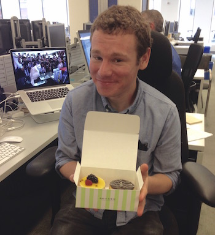
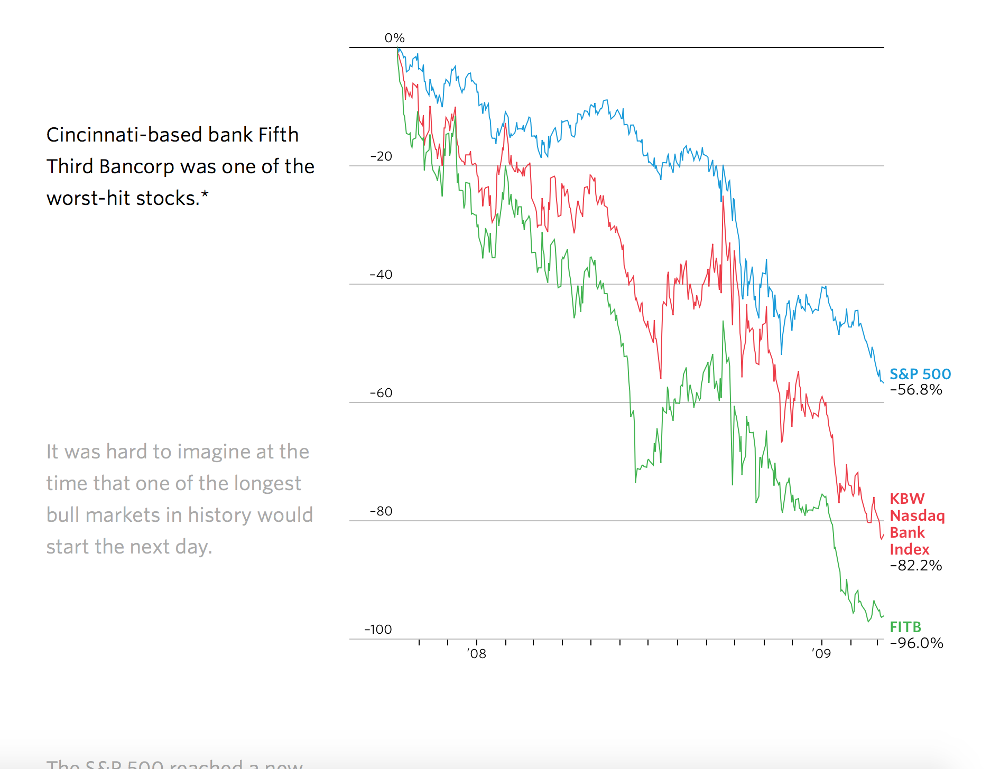
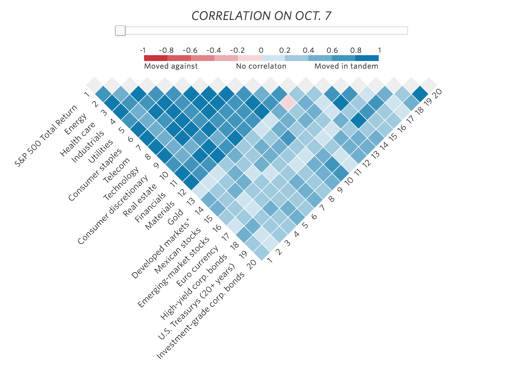
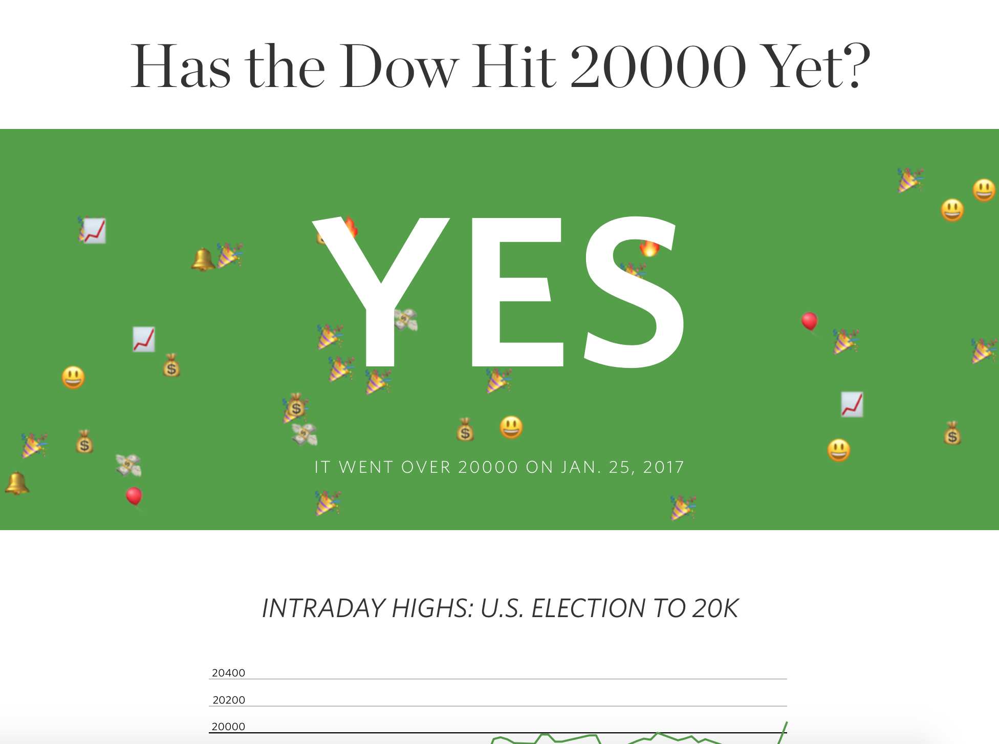
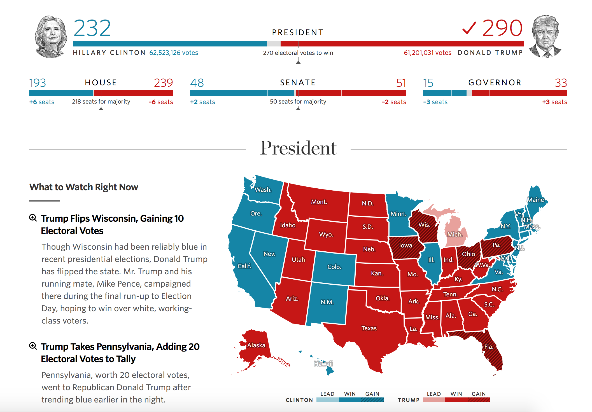
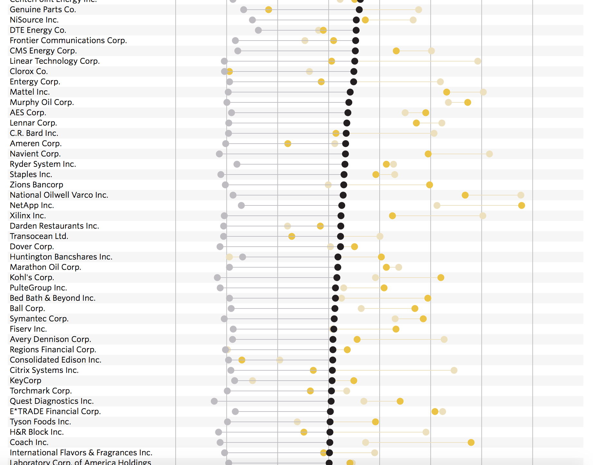
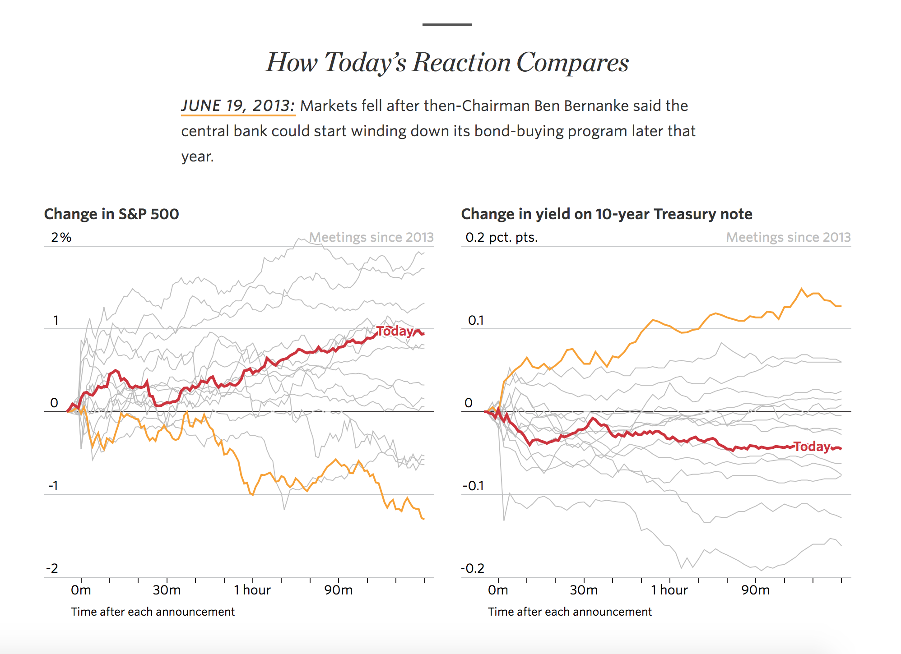
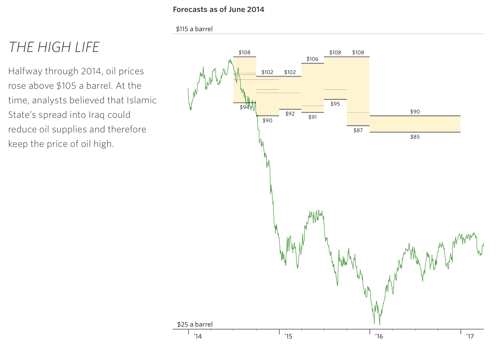
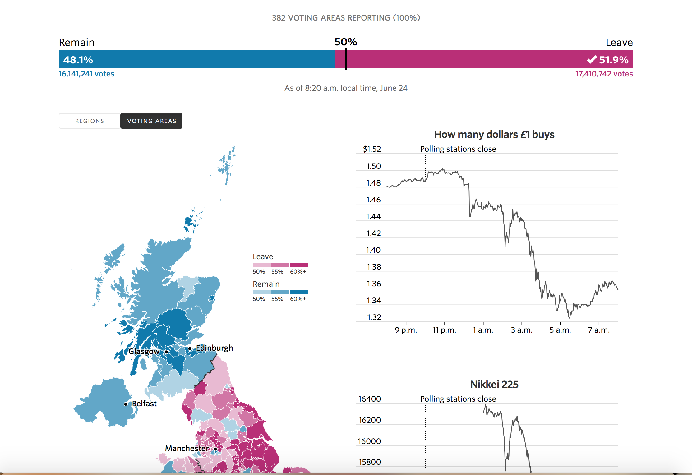
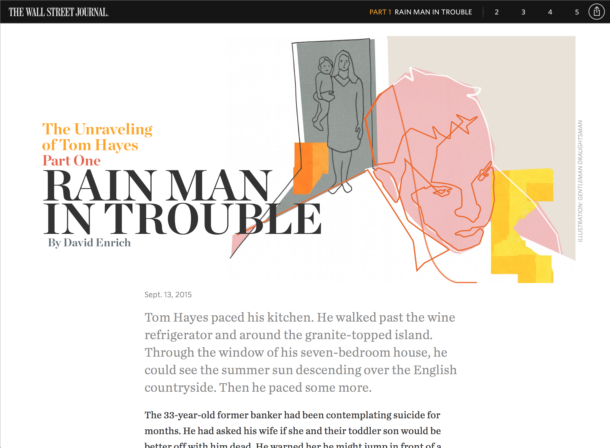

“Elliot Bentley is part of a new breed of journalist-cum-coder” — The Guardian
Hi. I like journalism, coding, design, data, biology, games, music, Japan and cats, especially when combined. Currently, I work as a Graphics Editor for The Wall Street Journal where I develop interactive graphics and newsroom tools (including Pinpoint and The Meta Tag Checker, which are both open source). I worked in the London office for two and a half years before transferring to the main office in New York.
I previously worked for S&S Media as an editor of technical publications JAXenter.com and Web & PHP Magazine. I was also part of student newspaper The Courier's award-winning editorial team while at Newcastle University.
In my spare time I run a meetup called Journocoders and work on oTranscribe, an open source web app. My previous side projects have included Hype Machine-listed music blog Quiff Pro Fro.
If you'd like to get in touch, email me or send me a message on Twitter.
Interactive graphics portfolio
At the Wall Street Journal, I have been producing (among other things) interactive graphics. Here are a few of my favourites.
-

Bull’s Birthday
How stocks are doing eight years after hitting their crisis-era low.
-

Markets Splinter
Correlations are breaking down in the wake of the U.S. election, ending a long period in which assets’ tendency to cluster frustrated traders.
-

Has the Dow Hit 20000 Yet?
Tongue-in-cheek tracker of the market milestone.
-

U.S. Election Results 2016
Live results and maps for the night of the Clinton v Trump showdown.
-

Index Funds Are Taking Over The S&P 500
A Wall Street Journal analysis of U.S.-based mutual fund and ETF ownership of the S&P 500 reveals that passive funds have more than doubled their stake in the index over the last decade.
-

Reacting to the Fed
How markets are reacting to today’s Federal Reserve statement, and how they’ve reacted after previous meetings.
-

How Oil’s Fall Has Flummoxed Forecasters
Since the price of oil began its decline in mid-2014, analysts at major investment banks have struggled to accurately predict its moves, both short- and long-term.
-

Brexit Vote: Live Results
Results from the U.K.’s referendum on EU membership, plus market reaction.
-

How Fed Rates Move Markets
See how Treasurys, mortgage rates, stocks and the strength of the dollar shift when the Federal Reserve changes interest rates.
-

Mapped: Europe’s Pollution Problem
See where average levels of nitrogen dioxide are over the legal limit across the continent.
-

The Unraveling of Tom Hayes
A five-part immersive longform feature on Libor “mastermind” Tom Hayes.
-

The Events That Pushed Greece to the Economic Brink
Annotated timeline of Greek and Germany bond yields in relation to the Greek financial crisis.
-

How Eurozone GDP Stacks Up
Tracking GDP growth in the first quarter of 2015 in Eurozone countries as it was reported.
-

U.K. Election Results 2015
Live results of the May 7, 2015 U.K. general election and exit poll forecasts, as well as how the market was reacting.
-

Eurozone Bonds' Wild Ride
See how the eurozone crisis has led to an unprecedented era in European bond markets.
-

Greece's Debt Due: What Greece Owes When
Greece is negotiating with its eurozone creditors to get more aid before the indebted government runs out of cash.
-

How the Paris Shooting and Hostage Standoff Unfolded
French police faced off with gunmen on two fronts, as suspects behind the murderous attack on French magazine Charlie Hebdo and the shooting dead of a police woman took hostages after a two-day manhunt. Here is how events unfolded.
See also my older writing portfolio.